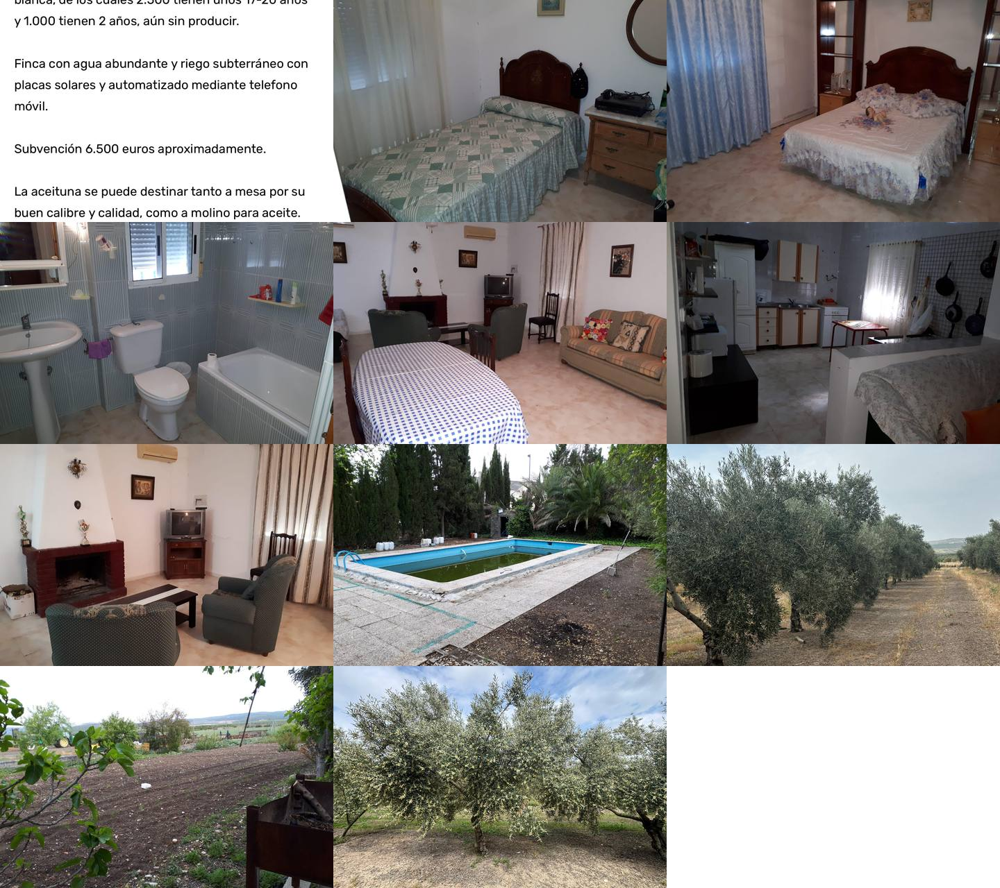

Descripción de la explotación
La finca cuenta con 3.500 olivos de un pie de la variedad Hojiblanca. Aproximadamente 2.500 olivos tienen entre 17 y 20 años y otros 1.000 tienen 2 años y todavía no están en producción.
Dispone de agua abundante y de un sistema de riego subterráneo con placas solares, automatizado mediante teléfono móvil.
La información facilitada indica una subvención aproximada de 6.500 € y señala que la aceituna puede destinarse tanto a mesa por su calibre y calidad como a molino para aceite.
En la última campaña indicada se han recolectado aproximadamente 85.000 kilos destinados a mesa.
Construcciones y valor añadido
Nave de aperos
Espacio auxiliar para la explotación agrícola.
Espacio auxiliar para la explotación agrícola.
Casa con piscina
Construcción residencial vinculada a la finca.
Construcción residencial vinculada a la finca.
Riego automatizado
Gestión mediante teléfono móvil.
Gestión mediante teléfono móvil.
Energía solar
Placas solares asociadas al sistema de riego.
Placas solares asociadas al sistema de riego.
¿Te interesa esta finca?
COOINMO puede preparar la ficha completa para compradores e inversores interesados en explotaciones de olivar productivo.
Solicitar información